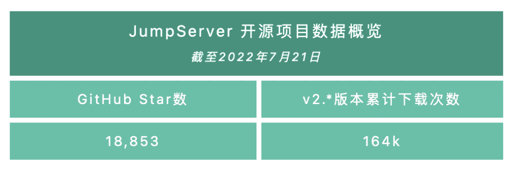
2022年7月25日，JumpServer开源堡垒机正式发布v2.24.0版本。在这一版本中，文件上传新增支持通过SFTP协议直连资产。会话分享方面，支持指定有效期和加入者，防止因链接泄漏引发的安全问题。服务端点支持通过资产标签进行匹配，从而可以规避IP冲突的场景。另外，这一版本的JumpServer还支持用户查看自己在使用过程中所创建的连接令牌信息。
X-Pack增强包方面，在这一版本中，Magnus数据库连接组件新增支持代理直连Oracle数据库。至此，Magnus数据库连接组件支持代理连接的数据库包括MySQL、MariaDB、Redis、Oracle（X-Pack增强包内）、PostgreSQL（X-Pack增强包内）。
同时，工单模块支持审批工单时修改申请资源。当用户申请资产授权工单或者应用授权工单时，审批人可在审批时对该工单的资源（例如资产、节点、应用或系统用户等）进行修改。
另外，这一版本的JumpServer还支持多种主题配色，例如中国红、深邃黑、科技蓝、高贵紫以及经典绿，用户可以根据自己喜好，选择相应的主题配色。
新增功能
1. 文件上传新增支持通过SFTP协议直连资产
在JumpServer v2.24.0版本中，文件上传新增支持通过SFTP协议直连资产。使用格式如下：
支持#格式：sftp jumpserverUsername#systemUsername#AssetIP#jumpserverHostIP -p2222
支持@格式：sftp jumpserverUsername@systemUsername@AssetIP@jumpserverHostIP -p2222
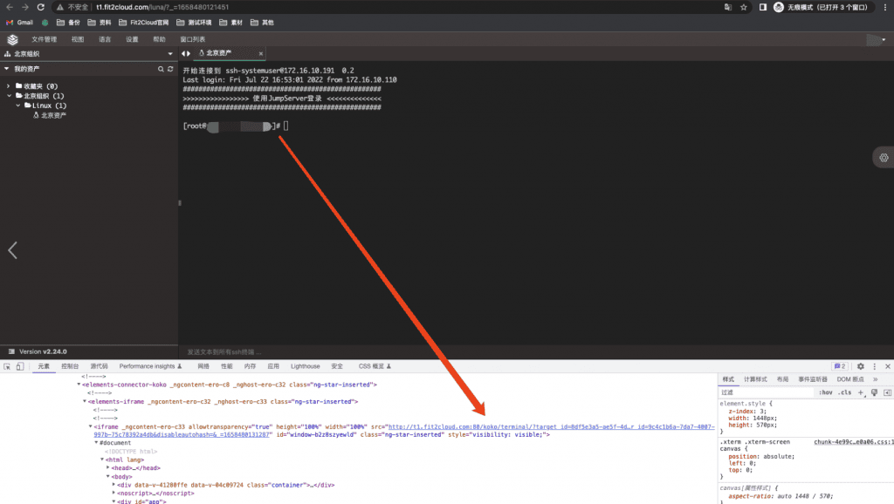
▲ 图1 SFTP直连资产信息▲ 图2 SFTP直连资产成功，并从本地上传文件到直连资产的指定目录
2. 会话分享支持指定有效期和加入者
在JumpServer v2.24.0版本中，会话分享支持指定有效期和加入者，防止因链接泄漏引发的安全问题。
系统管理员可以在“系统设置”→“安全设置”中开启会话分享，用户使用Web终端连接资产时，可分享该会话，并设置有效期和加入者。
▲ 图3 会话分享支持指定有效期和加入者
3. 支持用户查看自己使用过程中所创建的连接令牌信息
在JumpServer v2.24.0版本中，支持用户查看自己连接资产或应用使用过程中所创建的连接令牌信息。用户选择“个人信息”→“连接令牌”，即可查看连接令牌信息，并且可以点击“过期”按钮，使某个连接令牌过期。这样一来，用户就无法通过该令牌再次连接资产或者应用。
连接令牌创建方式：
① 连接SSH协议资产：通过Web终端连接Linux资产，选择连接方式为SSH Client ，即可创建令牌信息；
② 连接RDP协议资产：通过Web终端连接RDP资产，选择连接方式为RDP客户端，即可创建令牌信息；
③ 连接数据库应用：通过Web终端连接数据库应用，选择连接方式为DB Client客户端，即可创建令牌信息；
④ 通过调用API方式。
▲ 图4 用户可查看自己连接的令牌信息，也可以手动点击“过期”按钮，使令牌立即过期
4. 服务端点支持通过资产标签进行匹配
在JumpServer v2.24.0版本中，服务端点支持通过资产标签进行匹配，从而规避IP冲突的场景。对于服务端点的选择策略，目前支持根据端点规则指定端点和通过资产标签选择端点两种方式。两种方式优先使用标签匹配，因为IP段可能冲突，标签方式是作为规则的补充存在的。
■ 根据端点规则指定端点；
■ 通过资产标签选择端点，标签名必须为endpoint，值是端点的名称。
IP冲突的场景如下：
创建北京组织和上海组织，两个组织存在资产内网IP段冲突的情况，如两个组织的资产IP网段都是172.16.10.1-172.16.10.200。此时我们希望上海的IP网段的走上海的端点服务，北京的IP网段走北京的端点服务，具体步骤如下：
① 创建两个服务端点，分别是北京端点：t1.fit2cloud.com，上海端点：t2.fit2cloud.com；
② 创建北京端点规则，例如172.16.10.1-172.16.10.200，指定使用t1.fit2cloud.com服务端点；
③ 创建上海端点规则，例如172.16.10.1-172.16.10.200，指定使用t2.fit2cloud.com服务端点；
④ 北京组织创建标签，标签名必须为endpoint，值为端点的名称，例如示例中是北京端点；
⑤ 上海组织创建标签，标签名必须为endpoint，值为端点的名称，例如示例中是上海端点；
⑥ 测试上海和北京分别去连接相同的IP网段，查看资产使用的服务端点。
▲ 图5 北京组织创建资产标签，标签名必须为endpoint，值的名称为北京端点
▲ 图6 上海组织创建资产标签，标签名必须为endpoint，值的名称为上海端点
▲ 图7 上海端点规则和北京端点规则，IP网段均为：172.16.10.1-172.16.10.200
▲ 图8 北京的IP网段走北京的端点服务
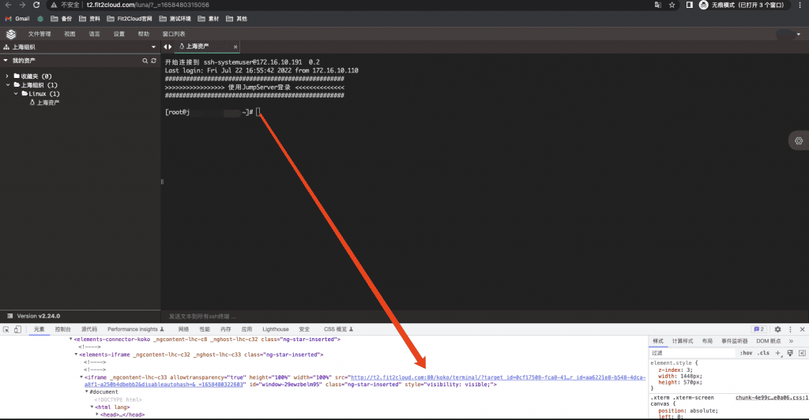
▲ 图9 上海的IP网段走上海的端点服务5. Magnus数据库连接组件新增支持代理直连Oracle数据库（X-Pack增强包内）
在JumpServer v2.24.0版本中，Magnus组件新增支持代理直连Oracle数据库（目前仅支持Oracle Database 11g和12c版本）。用户可以使用命令行方式连接JumpServer纳管的Oracle数据库，也可以使用Oracle客户端管理工具，例如Navicat等图形界面化工具进行连接。
目前，Magnus组件支持的数据库包括MySQL、MariaDB、Redis、PostgreSQL（X-Pack增强包内）以及Oracle（X-Pack增强包内）。
用户可以通过Web终端点击”Oracle”数据库，选择“DB Client”连接方式，获取数据库连接信息。用户可以点击“拉起客户端”按钮，直连数据库；还可以复制命令行连接信息，到Terminal执行命令去连接数据库；还可以使用数据库客户端工具（例如Navicat，暂不支持SQL Developer）连接数据库。
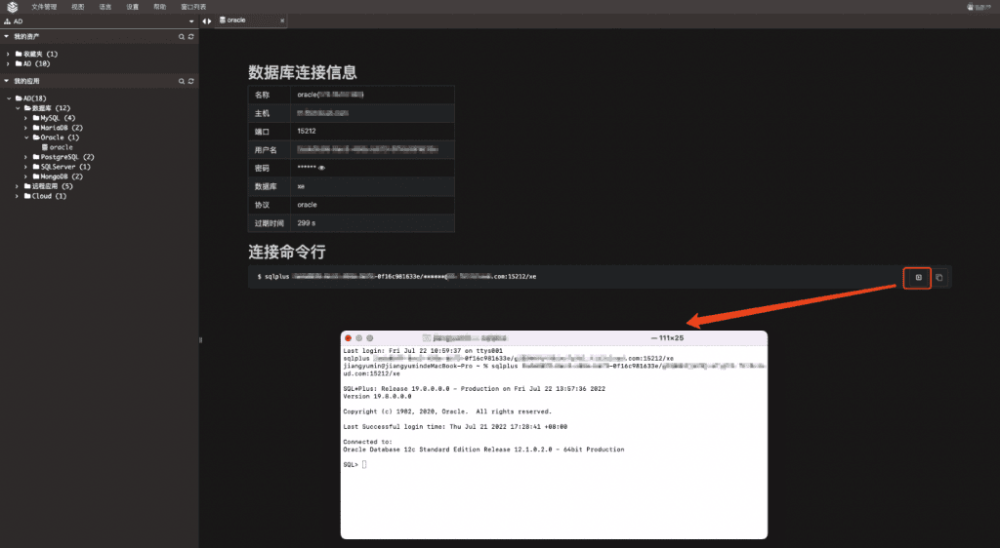
▲ 图10 点击客户端执行方式，拉起本地客户端连接数据库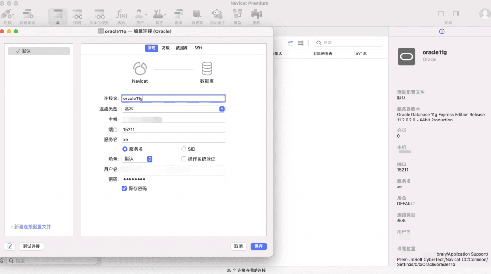
▲ 图11 使用Navicat工具，输入数据库连接信息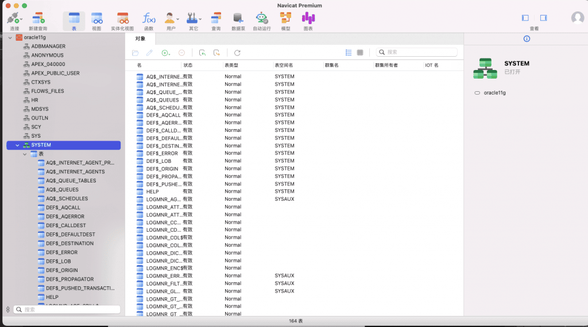
▲ 图12 使用Navicat工具成功连接数据库，并进行操作6. 支持多种主题配色（X-Pack增强包内）
在JumpServer v2.24.0版本中，还支持多种主题配色，包括中国红、深邃黑、科技蓝、高贵紫以及经典绿。用户可以根据自己喜好，选择相应的主题配色。
系统管理员通过选择“系统设置”→“界面设置”，即可进行主题设置。
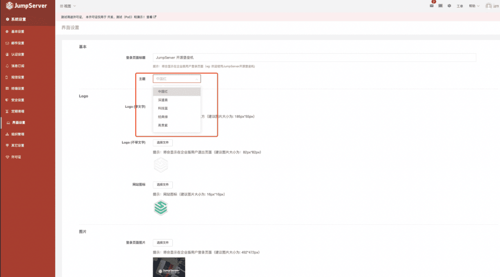
▲ 图13 系统管理员通过“系统设置”→“界面设置”进行主题设置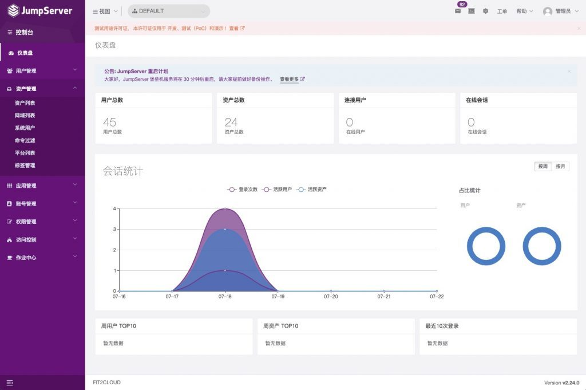
▲ 图13-1 主题之高贵紫高贵紫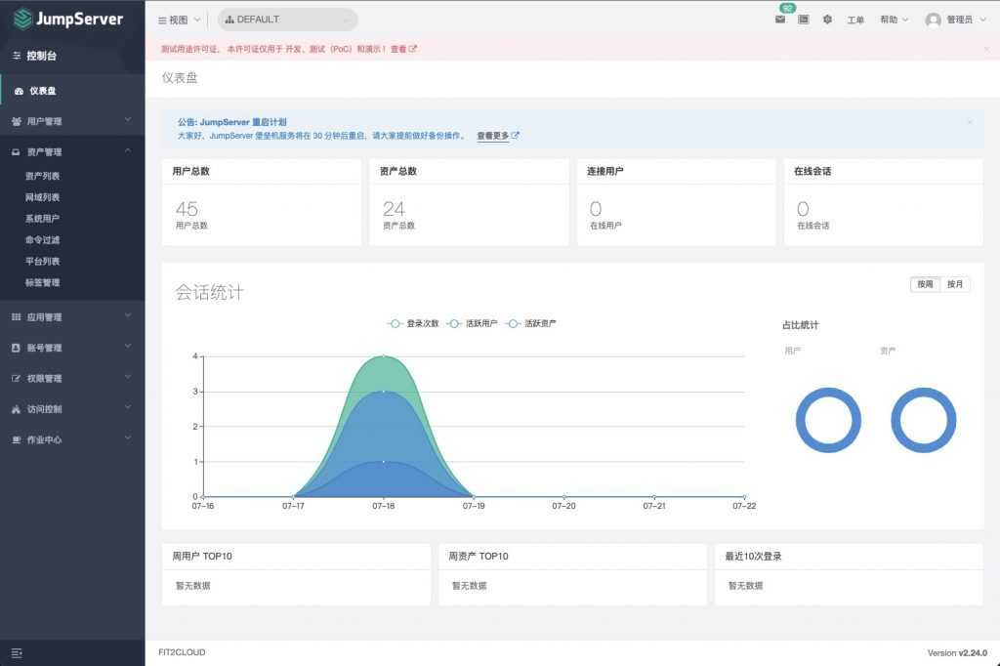
▲ 图13-2 主题之经典绿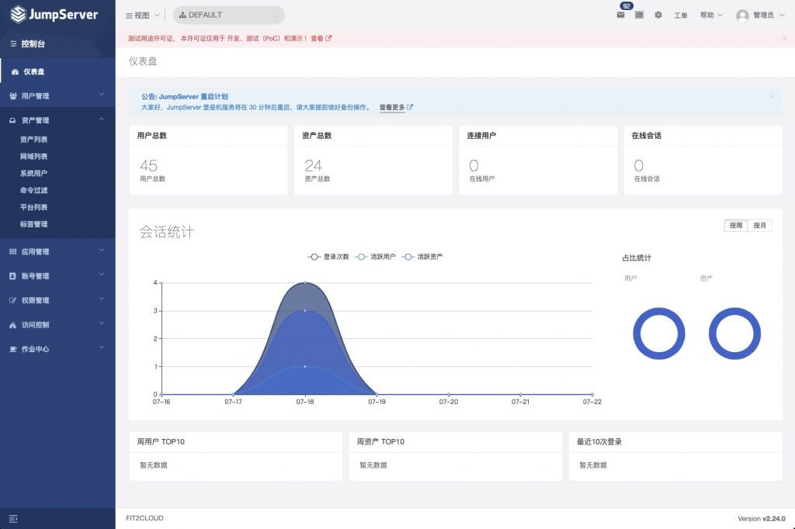
▲ 图13-3 主题之科技蓝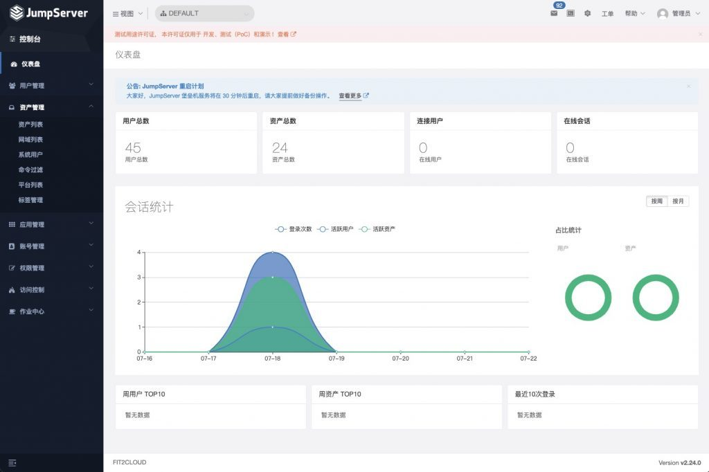
▲ 图13-4 主题之深邃黑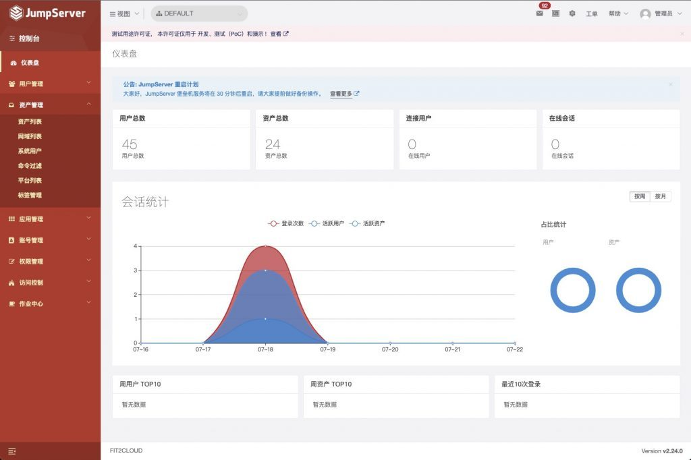
▲ 图13-5 主题之中国红7. 工单模块新增支持审批工单时修改申请资源（X-Pack增强包内）
在JumpServer v2.24.0版本中，工单模块新增支持审批工单时修改申请资源。用户申请资产授权工单，审批人审批时可以对该工单的资源（例如资产、节点、系统用户、授权时间，以及资产的动作权限）进行修改。用户申请应用授权工单，审批人审批时可以对该工单的资源（例如应用、系统用户、授权时间以及应用的动作权限）进行修改。
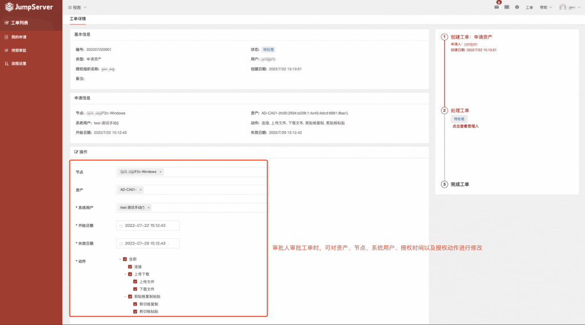
▲ 图14 审批人审批资产工单时，可对资产、节点、系统用户、授权有效期、授权动作进行修改
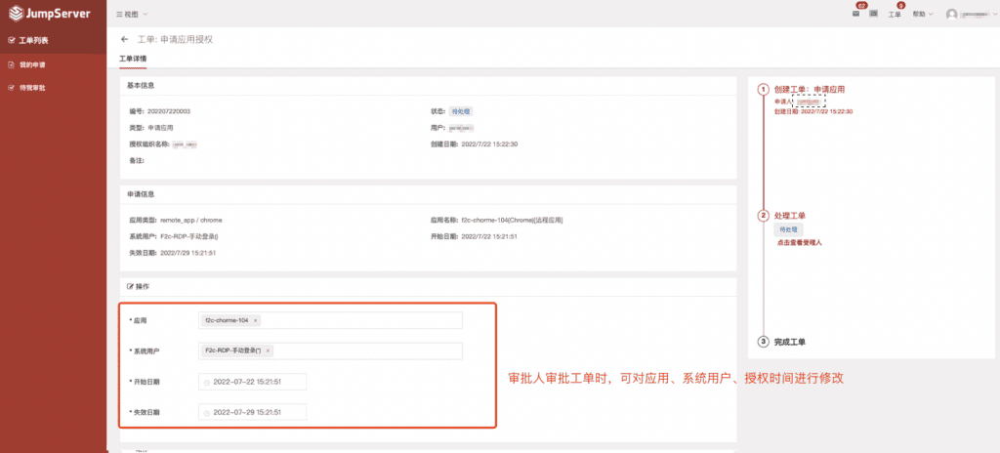
▲ 图15 审批人审批应用工单时，可对应用、系统用户、授权有效期进行修改功能优化
■ AMD架构部署或升级数据库时，默认使⽤MariaDB作为后台数据库；
■ ⽤户通过SSH客户端登录时，⽀持空闲超时断开；
■ ⽤户⼯作台和Web Terminal页⾯⽀持⽤户查看所有权限组织的资源；
■ 优化系统⽤户私钥最⼤长度为16384字节；
■ 优化OIDC认证配置中JumpServer地址为⾮必填项，实现多个不同端点访问时回调为当前访问的地址；
■ 优化会话列表，显⽰建⽴连接的终端名称；
■ 优化下载页⾯，添加离线播放器的下载链接；
■ 连接Kubernetes应⽤时，⽀持使⽤Helm命令；
■ 创建更新⽤户和⽤户列表时支持添加激活字段；
■ 更新系统⽤户时，⽀持显⽰密钥指纹；
■ 优化Telnet协议的系统⽤户⽤户名为⾮必填项；
■ 云管中⼼同步实例任务⽀持IP⽩名单（X-Pack增强包内）。
Bug修复
■ 修复⽤户⾃更新失败的问题；
■ 修复Elasticsearch命令存储更新忽略证书字段不成功的问题；
■ 修复POST⽅法调⽤AuthBook接口时报错的问题；
■ 修复依赖库版本导致⽣成加密Key时内存泄露的问题；
■ 修复导⼊/导出⽂件时，对于布尔类型字段的判断问题；
■ 修复⽤户通过飞书认证时，登录⽇志中没有记录认证⽅式的问题；
■ 修复⽤户授权规则过期提醒天数不准确的问题；
■ 修复终端管理操作列不显⽰的问题；
■ 修复右击资产树后，点击切换组织不⽣效的问题；
■ 修复⼯单页⾯刷新后会返回到⼯作台的问题（X-Pack增强包内）；
■ 修复⼯单⾃定义搜索时报错的问题（X-Pack增强包内）。